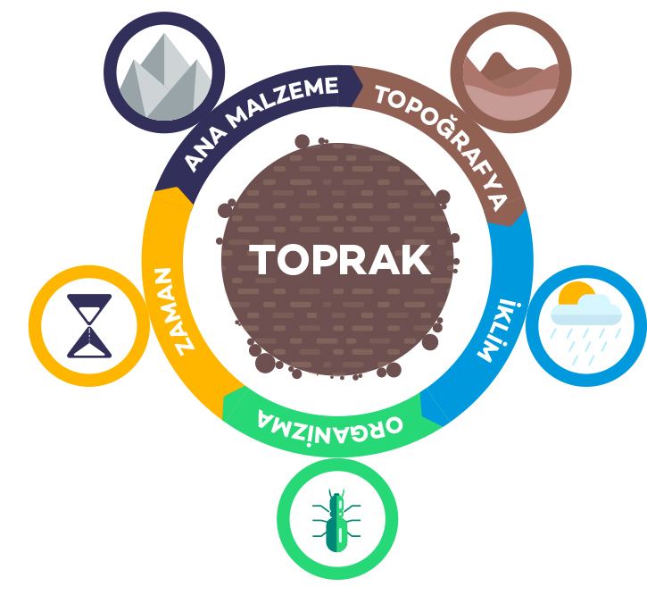

Fiziksel, kimyasal ve biyolojik süreçlerin bir araya gelerek toprağın nasıl oluştuğu.
Toprak oluşumu, çeşitli fiziksel, kimyasal ve biyolojik süreçlerin bir araya gelerek kayaların parçalanması ve bitki/hayvan kalıntılarının birleşmesiyle gerçekleşir. Bu süreç milyonlarca yıl alabilir ve genellikle şu faktörler etkilidir:
Fiziksel Aşınma: Rüzgar, su ve buz gibi doğal etkenler, kayaları parçalayarak küçük parçacıklara ayırır. Bu süreç, kayaların yüzeyini erozyona uğratır.
Kimyasal Bozunma: Suya karışan gazlar ve asitler, kayaların kimyasal olarak ayrışmasına neden olur. Örneğin, karbondioksitli su kayaların çözünmesine yol açabilir.
Organik Maddelerin Katılması: Bitki ve hayvan kalıntıları, toprağa organik madde sağlar. Bu maddeler, toprağın yapısını zenginleştirir ve humus oluşumuna katkıda bulunur.
Mineral Birikimi: Kayalardan gelen mineraller, parçalanmış malzemelerle birleşerek toprağın mineral içeriğini oluşturur.
Biolojik Faaliyetler: Topraktaki organizmalar, parçacıkları parçalayarak ve organik maddeleri ayrıştırarak toprak oluşumuna katkı sağlar.
Bu süreçler, toprağın üst kısmında tabakalar oluşturur ve her bir tabaka farklı oluşum aşamalarını yansıtabilir.
Toprak oluşumu, jeomorfoloji, iklim, bitki örtüsü ve coğrafya gibi faktörlerden etkilenir. Her bölgede farklı koşullar, farklı toprak tiplerinin oluşmasına yol açabilir.
Bilgi almak için tıkla.